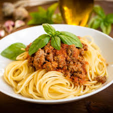

Ritorna alla pagina Home
SPAGHETTI AL RAGU

Vuoi diventare un vero Italiano? se la risposta è sì dovrai perforza cucinare degli spaghetti al ragu di carne. non te ne pentirai!
INGREDIENTI (per 4 persone):
- 320 g di spaghetti
- 300 g di carne macinata
- 400 g di passata di pomodoro
- 1 carota
- 2 cucchiai di olio d'oliva
PREPARAZIONE
- tritare finemente carota, sedano e cipolla e farli rosolare in una padella con olio d'oliva.
- cuocere a fuoco medio-alto fino a quando non si sarà ben rosolata.
- Sfumare con il vino rosso e lasciarlo evaporare.
- Aggiungere la passata di pomodoro e mescolare. Aggiungere la foglia di alloro se desiderato.
- Cuocere a fuoco lento per circa 1 ora, mescolando ogni tanto. Regolare di sale e pepe.
- Cuocere gli spaghetti in abbondante acqua salata, scolarli al dente e condirli con il ragù.